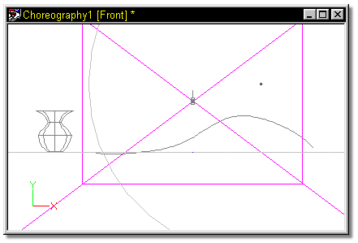
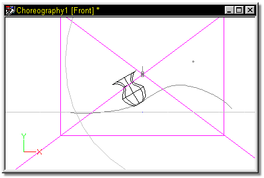
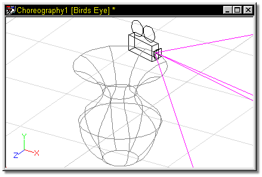

“Path” constraints are used to make a character follow along a spline. Any
character can follow any spline in any choreography.
“Path” constraints are used to make a character follow along a spline. Any
character can follow any spline in any choreography.
Use the picker to select a path for the object to follow, or, if the need is for the object to follow a spline on another object (a car traveling along a hilly terrain), hold down the shift key and use the picker to click the appropriate spline.
Generally, paths are used to describe where in a scene an object is to travel. In this example, there is a path, and a simple object (vase).

When the vase is constrained to the path, and the Ease channel is set, the vase travels along the path.

To constrain an object to a spline on another object (in this case, the camera is constrained to a spline on the vase), after the constraint has been added, hold down the shift key and click the spline onto which the object is to be constrained.

Tell Me About:
About Constraints
"Aim At" Constraints
"Kinematic" Constraints
"Translate To" Constraints
"Orient Like" Constraints
"Aim Roll At" Constraints
"Spherical Limits" Constraints
Blending Constraints
Constraint Order
Animating Constraints
Targets
Circular Constraints